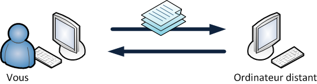
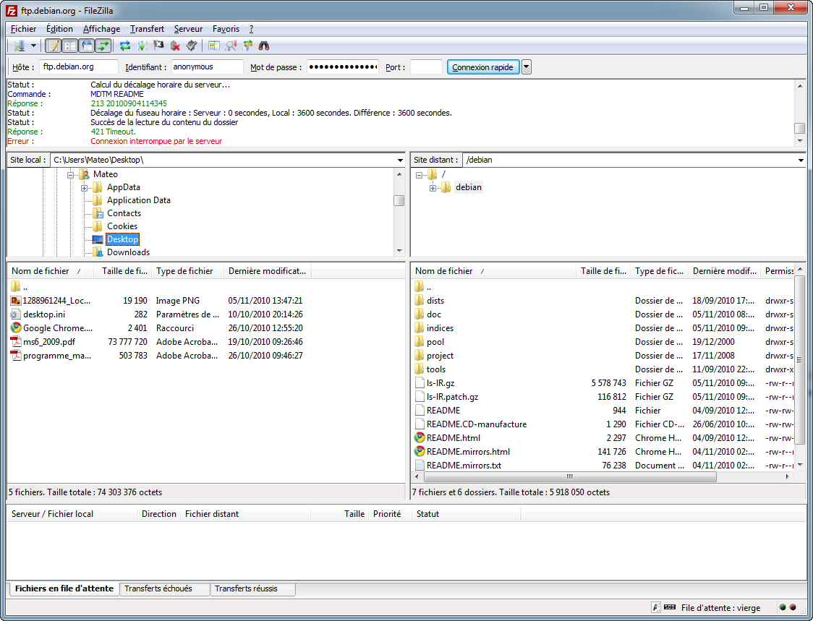
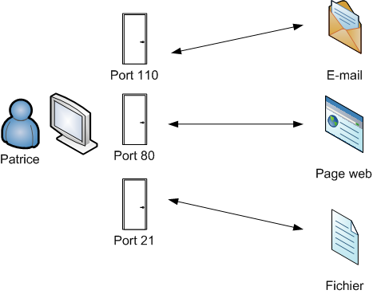
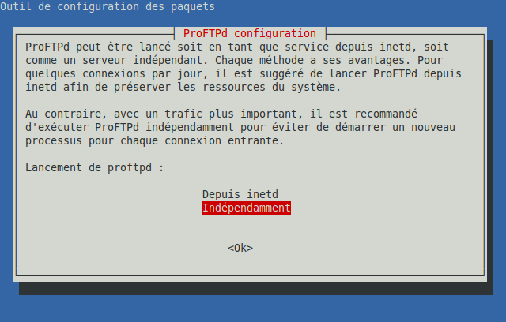
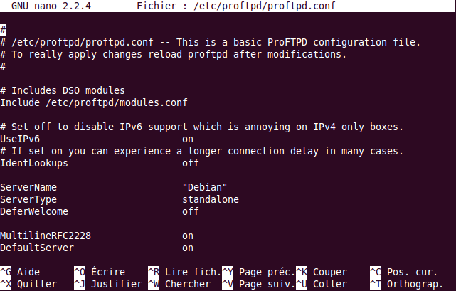
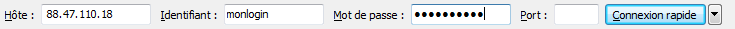

Pour échanger des fichiers avec un serveur, la plupart des internautes ont recours à ce qu'on appelle le "FTP". Les webmasters ont l'habitude d'utiliser le FTP pour envoyer les fichiers de leur site web sur un serveur.
Utiliser le FTP est très simple, je l'explique notamment dans mon tutoriel sur la création de sites web. Il suffit d'installer un petit logiciel (comme FileZilla), de rentrer des informations et hop, vous voilà connecté pour échanger des fichiers !
Ici, nous allons nous intéresser au montage d'un serveur FTP de toute pièces. Si vous avez votre propre serveur dédié et que vous voulez permettre à des personnes de s'y connecter en FTP, ce tutoriel est fait pour vous !
Pour que 2 ordinateurs puissent communiquer entre eux, ils doivent parler la même "langue". En voyant que les ordinateurs commençaient à se multiplier et étaient tous différents (dès les années 1970 !), on a commencé à imaginer un système pour que 2 ordinateurs puissent échanger des fichiers entre eux. Le FTP était né.
Le FTP est donc une sorte de langue. Pour être tout à fait précis, on parle de protocole de communication. FTP signifie d'ailleurs "File Transfer Protocol", c'est-à-dire "Protocole de Transfert de Fichiers". Ca semble compliqué dit comme ça, mais pourtant l'idée est simple : c'est un moyen d'échanger des fichiers entre ordinateurs.
Beaucoup de gens semblent l'ignorer, mais le FTP est une méthode de communication qui fonctionne dans les deux sens. On peut :
Envoyer des fichiers sur un autre ordinateur (upload)
Télécharger des fichiers depuis un autre ordinateur (download)

Le FTP permet d'échanger des fichiers entre ordinateurs
A quoi ressemble la "langue" du FTP ?
C'est un ensemble de commandes et de réponses que s'échangent les ordinateurs. Dans la pratique, elles ressemblent à ceci :
Bien entendu, nous n'avons pas besoin de connaître ce langage ! Pour simplifier l'usage du FTP, on a créé des logiciels faciles d'emploi. FileZilla est l'un des plus célèbres d'entre eux :

FileZilla permet de communiquer en FTP... sans avoir à connaître la langue du FTP !
A gauche de la fenêtre : votre ordinateur. A droite : l'ordinateur auquel vous êtes connecté (le serveur). Il suffit de faire glisser les fichiers dans un sens ou dans l'autre pour se les transmettre.
Pour se connecter au serveur FTP, on emploie un port de connexion particulier, le port 21. Les ports sont des portes d'accès à un ordinateur par lesquels transitent des services :

Le port 80 est utilisé pour le web (échanges de pages web via HTTP), le port 21 pour l'échange de fichiers (FTP), etc.
Installer un serveur FTP est un petit peu plus complexe qu'installer un client FTP. Mais au fait, savez-vous faire la différence entre ces 2 types de programmes ?
Le client FTP est le logiciel que vous utilisez pour échanger les fichiers. FileZilla est un exemple de client FTP.
Le serveur FTP est un programme qui permet l'échange de fichiers. On l'installe sur le serveur.
Nous nous intéressons ici à l'installation du serveur FTP. Pour commencer, connectez-vous à votre serveur en SSH.
Sur les exemples qui suivent je serai sur un serveur dédié Gandi, mais comme je l'expliquais plus tôt la procédure est la même si vous avez une Dedibox, un Kimsufi ou tout autre serveur dédié. Je vais ici supposer que votre serveur tourne sous Debian Linux.
On se connecte en SSH :
mateo@mateo-desktop:~$ ssh monserveur.moimeme.org
Linux Andetta 2.6.18-xenU #1 SMP Tue Nov 24 18:35:42 CET 2009 i686 GNU/Linux
[-----------------------------------------]
Gandi - Welcome to your new OS image.
Documentation :
[EN] http://wiki.gandi.net/en/hosting
[FR] http://wiki.gandi.net/fr/hosting
[-----------------------------------------]
Last login: Fri Nov 5 14:44:47 2010 from did75-16-88-162-139-115.fbx.proxad.net
mateo@mateo-server:~$
Tout comme il existe plusieurs clients FTP, il existe plusieurs serveurs FTP :
ProFTPd
vsFTPd
PureFTPd
...
Je vous propose ici d'utiliser ProFTPd, qui fait partie des plus connus. Comme souvent sous Debian (et Ubuntu), l'installation est d'une simplicité déroutante :
sudo apt-get install proftpd
On utilise apt-get pour télécharger et installer le programme ProFTPd. Lors de l'installation, on vous posera cependant une question histoire de corser les choses :

Il y a deux façons de lancer ProFTPd :
Depuis inetd : ProFTPd ne sera lancé que si un client se connecte à la machine par FTP. Avec cette technique, le serveur FTP ne consomme pas de ressources sur le serveur lorsque personne n'est connecté, mais le démarrage du serveur FTP est plus lent.
Indépendamment : ProFTPd est lancé dès le démarrage du serveur et tourne toujours en toile de fond. Je vous recommande de choisir cette option.
Globalement, la première technique est recommandée pour un serveur FTP qui a peu de connexions par jour, et la seconde pour un serveur FTP fréquemment utilisé.
En pratique, je vous recommande de sélectionner indépendamment (qui est d'ailleurs la valeur par défaut). Le serveur FTP n'en sera que plus réactif et les serveurs ont aujourd'hui assez de mémoire pour ne pas être gênés par la présence d'un serveur FTP.
Maintenant que ProFTPd est installé, allons faire un tour dans son fichier de configuration /etc/proftpd/proftpd.conf. Pour l'ouvrir, vous pouvez utiliser l'éditeur nano (plus simple) ou vim (plus compliqué, si vous avez l'habitude) :
sudo nano /etc/proftpd/proftpd.conf
Le fichier ressemble à ceci :

On retrouve une instruction par ligne. Certaines lignes sont précédées d'un dièse # : ce sont des commentaires qui sont ignorés. Il servent la plupart du temps à vous indiquer à quoi sert la ligne qui suit. Parfois, il faudra enlever le # au début d'une des lignes pour activer l'instruction qu'elle contient.
Présentation des principales directives de configuration
Voici les lignes que vous pouvez modifier (ou non) selon vos souhaits :
ServerName
Indique le nom du serveur FTP. Ce nom sera affiché lorsque des clients se connecteront au serveur. Par défaut ici, la valeur est "Debian", vous pouvez la remplacer par ce que vous voulez ("Mateo FTP Chez Ouam" par exemple :-° ).
TimeoutIdle
Le délai, en secondes, au bout duquel un client est automatiquement déconnecté s'il n'est plus actif sur le serveur FTP.
DefaultRoot
Le répertoire auquel auront accès les personnes qui se connecteront en FTP.
Pour activer DefaultRoot, supprimez le # en début de ligne. La valeur ~ de la commande signifie que l'utilisateur sera limité à son dossier personnel (/home/toto par exemple). Il ne pourra pas aller "fouiller" dans d'autres dossiers.
Port
Le port de connexion au serveur FTP. La quasi-totalité du temps ce port est 21, vous ne devriez pas avoir à le changer sauf si vous êtes bloqué par un pare-feu.
PassivePorts
Une gamme de ports autorisés pour les transferts de fichiers en mode passif.
Qu'est-ce que le mode passif ?
Pour échanger les fichiers, un serveur FTP peut utiliser l'un de ces deux modes :
Mode actif : c'est le client FTP qui détermine sur quel port se feront les échanges de fichiers. Cette technique est la plus ancienne et pose bien souvent des problèmes à cause du pare-feu.
Mode passif : c'est le serveur FTP qui détermine le port d'échange des fichiers. C'est la technique recommandée aujourd'hui.
L'option PassivePorts vous permet de déterminer dans quelle gamme de ports le serveur pourra piocher pour ouvrir un canal d'échange de fichiers. La valeur par défaut est en général suffisante, sauf si vous avez besoin de restreindre les ports à cause d'un pare-feu.
MaxInstances
Le nombre maximum de connexions simultanées que vous voulez autoriser sur votre serveur FTP. La valeur par défaut de 30 est généralement largement suffisante. Ne l'augmentez que si votre serveur FTP s'apprête à être utilisé par de très nombreuses personnes.
<Anonymous ~ftp>
Vous pouvez décommenter toutes les lignes à partir de <Anonymous ~ftp> pour autoriser les connexions anonymes à votre serveur.
Si vous activez les connexions anonymes sur votre serveur FTP, n'importe quel internaute pourra s'y connecter. Il aura accès au répertoire /home/ftp en lecture seule. Il pourra lire et télécharger des fichiers, mais pas les modifier ni ajouter de fichiers (il faudrait être fou pour autoriser tout le monde à écrire n'importe quoi sur son serveur ! :o ).
Activation de la nouvelle configuration
Les modifications ne sont pas prises en compte immédiatement après que vous ayez enregistré le fichier. Il faut demander à ProFTPd de recharger le fichier de configuration :
sudo /etc/init.d/proftpd reload
Au besoin, sachez qu'il est possible avec des commandes similaires de :
Redémarrer le serveur FTP : sudo /etc/init.d/proftpd restart
Stopper le serveur FTP : sudo /etc/init.d/proftpd stop
Lancer le serveur FTP (s'il n'est pas déjà lancé) : sudo /etc/init.d/proftpd start
En théorie, un restart aura le même effet qu'un reload : le nouveau fichier de configuration sera pris en compte dans les deux cas. En revanche, l'avantage de reload est que le serveur n'est pas momentanément coupé pour prendre en compte la nouvelle configuration. Ceux qui téléchargeaient des fichiers sur le serveur ne seront donc pas déconnectés.
Maintenant que votre serveur FTP est installé et configuré, vous aimeriez pouvoir vous y connecter n'est-ce pas ? Eh bien c'est très simple, vous avez 2 possibilités :
Utiliser le client FTP intégré à votre navigateur web
Utiliser un client FTP dédié comme FileZilla
Utiliser le client FTP intégré à votre navigateur web
Cette technique peut se révéler pratique si vous n'avez pas encore installé de client FTP sur votre machine. En effet, la plupart des navigateurs web permettent aujourd'hui d'accéder à un serveur FTP.
Il suffit de taper ftp://ip dans la barre d'adresse de votre navigateur. Remplacez "ip" par l'adresse IP de votre serveur (que vous devez connaître !). Exemple en image :
On vous demandera ensuite votre identifiant et votre mot de passe. Utilisez ceux de votre compte utilisateur Unix (même login et mot de passe que ceux que vous utilisez pour vous connecter en SSH). Si vous voulez ajouter des utilisateurs, il faut donc créer de nouveaux comptes sur la machine avec adduser.
Utiliser un client FTP dédié comme FileZilla
Une fois FileZilla installé, il suffit de remplir les champs de connexion en haut de la fenêtre :

Là encore, vous devez indiquer votre login et mot de passe. Ils correspondent aux identifiants sur la machine que vous utilisez pour vous connecter au serveur en SSH.
Si vous ne donnez ni login ni mot de passe, FileZilla tentera de se connecter en anonyme à votre serveur FTP. Cela ne fonctionnera que si vous avez autorisé les connexions anonymes au préalable dans le fichier de configuration.
L'installation et la configuration d'un serveur FTP sont au final assez simples. Il ne faut guère plus de quelques minutes en général pour monter un serveur FTP.
Notez que, pour échanger des fichiers avec un serveur, il existe d'autres techniques que le FTP :
FTPS : une version sécurisée du FTP qui crypte les échanges de fichiers, afin d'éviter qu'une personne ne puisse les intercepter.
SFTP : une connexion qui utilise le protocole SSH et qui crypte là aussi les échanges de fichiers. Son gros avantage est qu'il n'est pas nécessaire d'installer un serveur FTP ! Si SSH est installé, vous devriez pouvoir vous connecter à votre serveur en SFTP. Seul défaut : il vous faut un client qui gère ce mode de connexion. C'est le cas de FileZilla, qui vous permet de définir dans les options de connexion le mode "SFTP". Le login et le mot de passe sont là encore ceux de votre compte utilisateur.
Le FTP reste le plus couramment utilisé aujourd'hui car... c'est historiquement le plus répandu. Néanmoins, si vous en avez la possibilité, je vous recommande d'utiliser SFTP qui vous évite d'avoir à installer et configurer un serveur FTP !